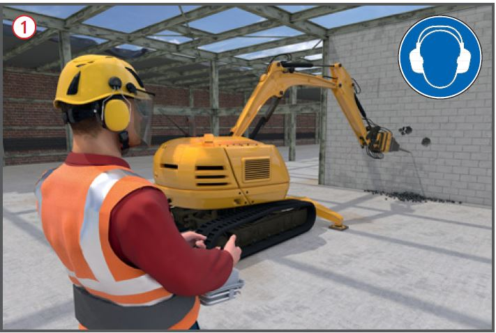

Abbrucharbeiten
|

| 1 | Gliederung einer Abbruchanweisung | ||
| 1 | Abbruchbaustelle (Ort/Straße): | Beginn: | |
| 2 | Bau/Abbruchgenehmigung: | Ende: | |
| 3 | Auftraggeber: | ||
| 4 | Aufsichtführender (Polier): | ||
| 5 | Fachbauleiter: | ||
| 6 | Bauleiter, LBO: | ||
| 7 | Koordinator des Auftraggebers: | ||
| 8 | Zuständige BG: | Mitglieds-Nr.: | |
| 9 | Einsatz von Subunternehmern: | ja | nein |
| 10 | Wenn ja, für welchen Teilbereich: | ||
| 11 | Kurzbeschreibung der baulichen Anlage: | ||
| 12 | Konstruktive Besonderheiten: | ||
| 13 | Art und Lage verbleibender Ver- und Entsorgungsleitungen: | ||
| 14 | Sicherung des öffentlichen Verkehrs durch: | ||
| 15 | Reihenfolge und Beschreibung der einzelnen Arbeitsschritte: | ||
| 16 | Vorgesehene Arbeitsabschnitte: | ||
| 17 | Gewählte Abbruchverfahren (ggf. mehrere): | ||
| 18 | Geplanter Maschinen- und Geräteeinsatz: | ||
| 19 | Tragfähigkeit befahrbarer Decken, kN/qm: | ||
| 20 | Notwendigkeit einer Abbruchstatik: | ja | nein |
| 21 | Verantwortlicher Tragwerksplaner/Unternehmer: | ||
| 22 | Falls Abbruchstatik erforderlich, Ersteller: | ||
| 23 | Schutz benachbarter Grundstücke durch: | ||
| 24 | Besondere Sicherheitsleistung benachbarter Grundstücke/Anlagen: | ||
| 25 | Abstützmaßnahmen am Gebäude: | ||
| 26 | Erforderliche Gerüste/Schutzdächer: | ||
| 27 | Zugänge zu den Arbeitsplätzen über: | ||
| 28 | Erforderliche Absturzsicherungen: | ||
| 29 | Personenaufnahmemittel mit Kran/Bagger und Anzeige bei der BG erforderlich: | ja | nein |
| 30 | Besondere Gefahrstoffe im Baustellenbereich: | ||
| 31 | Erforderliche persönliche Schutzausrüstungen: | ||
| 32 | Sicherung des Grundstücks nach Beendigung der Arbeiten: | ||
| 33 | Geplante Materialtrennung: | ||
| 34 | Art der Bereitstellung zur Entsorgung: | ||
| 35 | Transport und Entsorgung von gefährlichen Abfällen: | ||
| 36 | Transport und Entsorgung von nicht gefährlichen Abfällen: | ||
07/2021